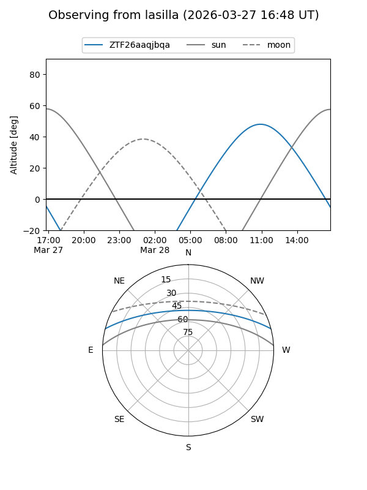
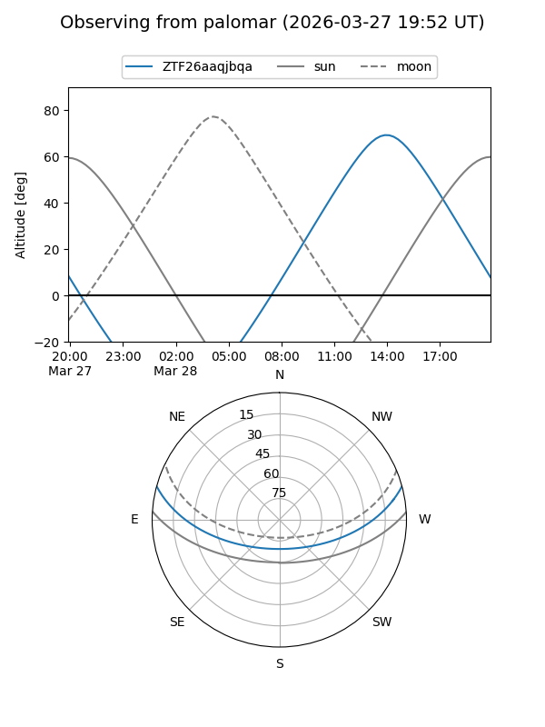
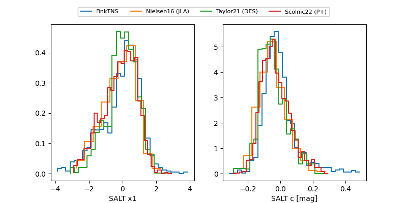

ZTF26aaqjbqa
Target ZTF26aaqjbqa at 2026-03-27 13:20
Aliases and brokers:
FINK: link
Lasair: link
ALeRCE: link
alt names
ZTF26aaqjbqa (ztf,fink_ztf)
Coordinates:
equatorial (ra, dec) = 278.4123,+12.69006
equatorial (HMS+DMS) = 18:33:38.96,+12:41:24.21
galactic (l, b) = (42.3318,+9.64208)
Flags:
Photometry:
last ztfg=20.12
1 ztfg detections
Lightcurve
Visibility


Additional plots
